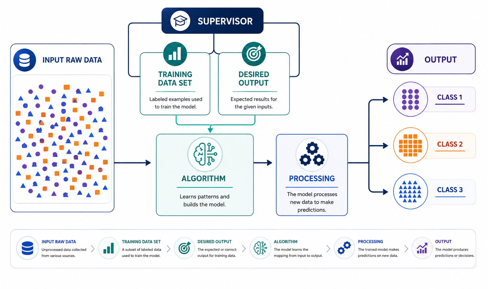
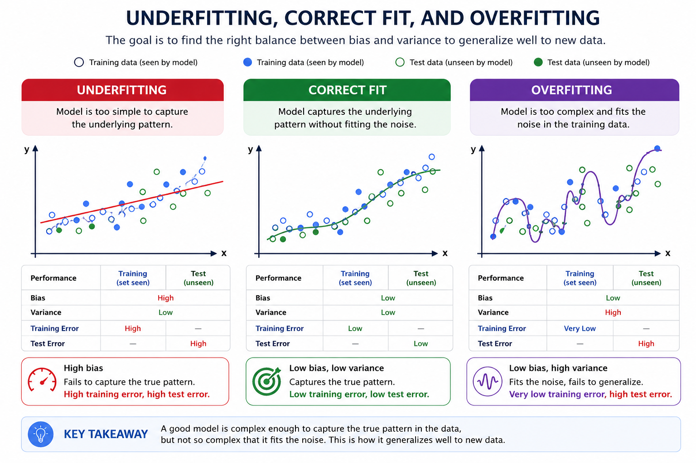
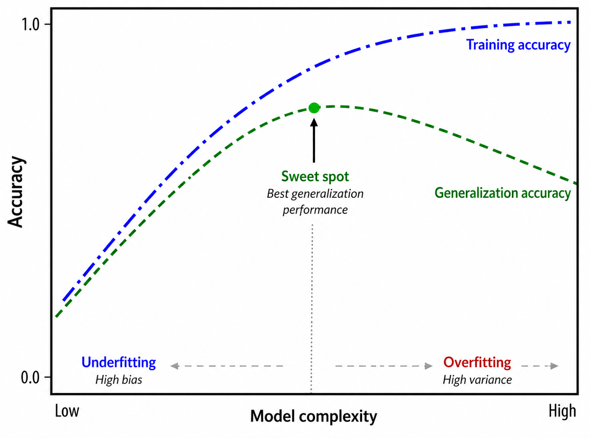
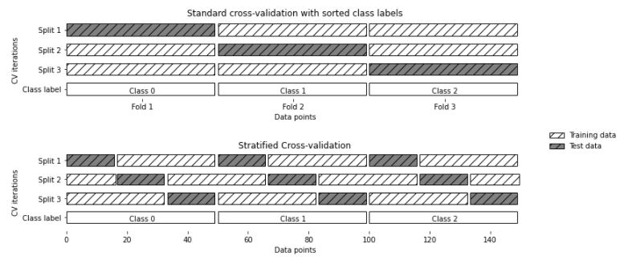

1. Supervised Learning#
{kind=link}

Fig. 1.1 Supervised learning. Source: v7labs.com.#
Introduction
The most effective machine learning algorithms automate decision-making by generalizing from examples. Supervised learning is the clearest case: input-output pairs (labeled data) are provided to train models that classify data or predict outcomes accurately.
The algorithm adjusts its weights through cross-validation until it fits well, allowing it to produce accurate predictions for new inputs without further human intervention, thanks to the initial supervision it received.
1.1. Examples of Supervised Learning Tasks#
Recognizing handwritten zip codes on an envelope: The input is a scan of the handwriting, and the desired output is the actual zip-code digits. Building a dataset means collecting many envelopes, reading the zip codes yourself, and storing the digits as the ground-truth labels.
Determining whether a tumor is benign from a medical image: The input is the image, and the output is whether the tumor is benign. Building a model requires a database of medical images plus expert opinion: a physician must review every image and decide which tumors are benign. Additional diagnosis beyond the image itself may even be needed to confirm malignancy.
Detecting fraudulent credit-card transactions: The input is a transaction record, and the output is whether it is likely fraudulent. Assuming you are the card issuer, building the dataset means storing every transaction and recording whether a user reported it as fraudulent.
1.2. Classification and Regression#
Supervised machine learning problems are mainly divided into classification and regression. Classification predicts discrete categories and can be binary (two classes) or multiclass (more than two classes). A common example of binary classification is identifying whether an email is spam or not.
In binary classification, classes are usually labeled as positive and negative. The positive class simply represents the category of interest and does not imply any favorable meaning. Its definition depends on the application domain.
Regression predicts a continuous numerical value (a real number). For example, predicting a person’s annual income from demographic and socioeconomic variables is a regression task.
The key distinction between classification and regression is the nature of the output: classification predicts discrete categories, whereas regression predicts continuous values.
1.3. Generalization, Overfitting, and Underfitting#
In supervised learning, the goal is to build a model using the training set that can make accurate predictions on unseen data. This ability is known as generalization and is evaluated using the test set.
A model may achieve high accuracy on the training set but still perform poorly on new data. This occurs when the model becomes excessively complex and learns the specific details of the training data instead of the underlying patterns.
Overfitting occurs when a model adapts too closely to the training data and fails to generalize. In contrast, underfitting occurs when a model is too simple to capture the data structure, resulting in poor performance even on the training set.

Fig. 1.2 Overfitting and underfitting. Source aprendemachinelearning.#
Remark
Increasing model complexity generally improves training performance. However, overly complex models may overfit the training data and fail to generalize to unseen observations.
The goal is to identify the optimal level of complexity that achieves the best generalization performance by balancing underfitting and overfitting.
{kind=link}

Fig. 1.3 Complexity vs. accuracy for training and test sets. Source: towardsai.net.#
What gap is acceptable?
There is no fixed rule for deciding whether the gap between training performance and test performance is acceptable, but generally:
Gaps under 5-10% in the score are usually acceptable.
Gaps above 15-20% suggest the model may be overfitted and needs adjustment (regularization, more data, reduced complexity, etc.).
Bottom line: if a model performs exceptionally well on training but poorly on test data, it is likely memorizing rather than learning general patterns. Comparing train and test scores is key to detecting and correcting overfitting.
1.4. Why Is Overfitting Important?#
The ultimate goal of supervised machine learning is not to achieve perfect performance on the training data, but rather to build models that generalize well to unseen observations.
A model that performs extremely well on the training set but poorly on new data has learned the specific characteristics of the training data rather than the underlying patterns.
This phenomenon is known as overfitting.
Generalization vs. Overfitting
Scenario |
Train Performance |
Test Performance |
Interpretation |
|---|---|---|---|
Underfitting |
Low |
Low |
The model is too simple to capture the underlying patterns. |
Good Fit |
High |
High |
The model generalizes well to unseen data. |
Overfitting |
Very High |
Significantly Lower |
The model memorizes the training data and fails to generalize. |
1.5. Dataset#
In this example, we use the Breast Cancer Wisconsin Dataset, which is included in scikit-learn. This dataset contains diagnostic measurements extracted from breast mass images and is commonly used for binary classification problems.
1.6. Detecting Overfitting Using Statistical Tests#
from sklearn.datasets import load_breast_cancer
X, y = load_breast_cancer(return_X_y=True)
print("Observations:", X.shape[0])
print("Features:", X.shape[1])
Observations: 569
Features: 30
1.7. Why Not Use a Single Train-Test Split?#
Suppose a model produces the following results:
Training Accuracy = 100%
Testing Accuracy = 92%
Although this difference suggests possible overfitting, the conclusion is based on only a single train-test partition. A single split may be misleading because the results depend on the specific observations selected for training and testing. To obtain a more reliable estimate of model performance, we use:
1.7.1. Repeated Stratified K-Fold Cross-Validation#
This procedure:
Divides the data into multiple folds.
Preserves class proportions in every fold.
Repeats the process several times using different random partitions.
Produces multiple estimates of training and testing performance.
These repeated measurements allow statistical inference and provide a more robust assessment of model generalization.

Fig. 1.4 Stratified cross validation.#
1.8. Model Selection#
To intentionally create an overfitting scenario, we use a highly flexible decision tree:
from sklearn.tree import DecisionTreeClassifier
model = DecisionTreeClassifier(
max_depth=None, # Maximum depth of the tree.
min_samples_split=2, # Minimum number of samples required to split an internal node.
random_state=42 # Ensures reproducibility of results.
)
Why This Model?
A fully grown decision tree can continue splitting until it nearly memorizes the training data. As a result, it often achieves:
Training Accuracy ≈ 100%
However, such performance frequently comes at the cost of poor generalization.
1.9. Cross-Validation Procedure#
The following code evaluates the model using repeated cross-validation and stores the training and testing accuracies obtained in each fold.
import numpy as np
from sklearn.datasets import load_breast_cancer
from sklearn.tree import DecisionTreeClassifier
from sklearn.model_selection import RepeatedStratifiedKFold
from sklearn.metrics import accuracy_score
X, y = load_breast_cancer(return_X_y=True)
model = DecisionTreeClassifier(
max_depth=None,
min_samples_split=2,
random_state=42
)
cv = RepeatedStratifiedKFold(
n_splits=5,
n_repeats=10,
random_state=42
)
train_scores = []
test_scores = []
for train_idx, test_idx in cv.split(X, y):
X_train, X_test = X[train_idx], X[test_idx]
y_train, y_test = y[train_idx], y[test_idx]
model.fit(X_train, y_train)
train_pred = model.predict(X_train)
test_pred = model.predict(X_test)
train_scores.append(
accuracy_score(y_train, train_pred)
)
test_scores.append(
accuracy_score(y_test, test_pred)
)
train_scores = np.array(train_scores)
test_scores = np.array(test_scores)
1.10. Preliminary Analysis#
Before performing any statistical test, we should compare the average training and testing accuracies.
print(f"Mean Train Accuracy: {train_scores.mean():.4f}")
print(f"Mean Test Accuracy : {test_scores.mean():.4f}")
Mean Train Accuracy: 1.0000
Mean Test Accuracy : 0.9299
Interpretation
The model perfectly classifies the training data. However, its performance decreases noticeably when evaluated on unseen observations. This discrepancy suggests the presence of overfitting. Nevertheless, visual inspection alone is insufficient. We must determine whether the observed difference is statistically significant.
1.11. A Statistical Approach to Detecting Overfitting#
lue After observing a difference between training and testing performance, the next step is to determine whether this difference is statistically significant or simply the result of random variation. From a statistical perspective, detecting overfitting can be formulated as a hypothesis-testing problem.
Hypotheses
Statistical Methods for Detecting Overfitting
Paired \(t\)-Test
When performance scores are obtained across multiple cross-validation folds, a paired \(t\)-Test can be used to compare the mean training and testing scores.
The hypotheses are:
If the resulting \(p\)-value is smaller than the chosen significance level (commonly \(\alpha=0.05\)), the null hypothesis is rejected, indicating a statistically significant performance gap between the training and testing sets.
Wilcoxon Signed-Rank Test
The paired \(t\)-test assumes that the differences between paired observations are approximately normally distributed. When this assumption is questionable, the Wilcoxon signed-rank test provides a non-parametric alternative that does not rely on normality assumptions.
Confidence Intervals for the Performance Gap
In addition to hypothesis testing, it is informative to estimate the magnitude of the performance difference. A confidence interval can be constructed for:
For example, a 95% confidence interval provides a range of plausible values for the true performance gap.
If the interval contains zero, there is insufficient evidence to conclude that a meaningful difference exists.
If the interval excludes zero, the difference is statistically significant.
The width of the interval provides information about the uncertainty of the estimate.
Practical Interpretation
Statistical significance alone should not be the sole criterion for diagnosing overfitting.
A comprehensive assessment should consider:
The average difference between training and testing performance.
The associated \(p\)-value.
The confidence interval.
The practical relevance of the observed performance gap.
A statistically significant difference between training and testing scores is strong evidence of overfitting. However, the magnitude of the difference should also be evaluated, and potential remedies such as regularization, pruning, feature selection, or data augmentation should be considered to improve generalization performance.
1.12. Statistical Tests#
from scipy import stats
t_stat, p_value_t = stats.ttest_rel(
train_scores,
test_scores
)
w_stat, p_value_w = stats.wilcoxon(
train_scores,
test_scores
)
print(f"Paired t-test: t = {t_stat:.3f}")
print(f"p-value = {p_value_t:.5f}")
print(f"\nWilcoxon test: W = {w_stat:.3f}")
print(f"p-value = {p_value_w:.5f}")
Paired t-test: t = 20.905
p-value = 0.00000
Wilcoxon test: W = 0.000
p-value = 0.00000
1.12.1. Confidence Interval for the Performance Difference#
In addition to hypothesis testing, we estimate the magnitude of the performance gap.
diff = train_scores - test_scores
mean_diff = np.mean(diff)
conf_int = stats.t.interval(
confidence=0.95,
df=len(diff)-1,
loc=mean_diff,
scale=stats.sem(diff)
)
print(conf_int)
(np.float64(0.06339163757525602), np.float64(0.07687540170435896))
1.12.2. Interpretation#
The resulting confidence interval is:
(0.0634, 0.0769)
This indicates that the true difference between the mean training and testing accuracies is likely between 6.34% and 7.69%. In practical terms, the model’s training accuracy is expected to be approximately 6–8 percentage points higher than its testing accuracy. Because the confidence interval does not contain zero, there is statistical evidence that the performance difference is real and not merely the result of random sampling variability. Consequently, the model performs significantly better on the training data than on unseen data, providing evidence of overfitting.
1.13. Complete Statistical Evaluation#
alpha = 0.05
print(f"Mean Train Accuracy: {train_scores.mean():.4f}")
print(f"Mean Test Accuracy : {test_scores.mean():.4f}")
print(f"\nPaired t-test p-value: {p_value_t:.5f}")
print(f"Wilcoxon p-value: {p_value_w:.5f}")
lower_ci, upper_ci = conf_int
print("\n95% Confidence Interval:")
print(f"({lower_ci:.4f}, {upper_ci:.4f})")
if p_value_t < alpha:
print("\nSignificant difference detected.")
print("Evidence suggests overfitting.")
else:
print("\nNo significant difference detected.")
Mean Train Accuracy: 1.0000
Mean Test Accuracy : 0.9299
Paired t-test p-value: 0.00000
Wilcoxon p-value: 0.00000
95% Confidence Interval:
(0.0634, 0.0769)
Significant difference detected.
Evidence suggests overfitting.
1.13.1. Conclusion#
The model exhibits overfitting because its performance on the training data is significantly higher than its performance on unseen data. Furthermore, the relatively narrow confidence interval suggests that this performance gap is stable across the repeated cross-validation folds.
1.14. Complete Reproducible Example#
import numpy as np
from scipy import stats
from sklearn.datasets import load_breast_cancer
from sklearn.tree import DecisionTreeClassifier
from sklearn.model_selection import RepeatedStratifiedKFold
from sklearn.metrics import accuracy_score
# Load dataset
X, y = load_breast_cancer(return_X_y=True)
# Define model
model = DecisionTreeClassifier(
max_depth=None,
min_samples_split=2,
random_state=42
)
# Cross-validation strategy
cv = RepeatedStratifiedKFold(
n_splits=5,
n_repeats=10,
random_state=42
)
train_scores = []
test_scores = []
for train_idx, test_idx in cv.split(X, y):
X_train, X_test = X[train_idx], X[test_idx]
y_train, y_test = y[train_idx], y[test_idx]
model.fit(X_train, y_train)
train_pred = model.predict(X_train)
test_pred = model.predict(X_test)
train_scores.append(
accuracy_score(y_train, train_pred)
)
test_scores.append(
accuracy_score(y_test, test_pred)
)
train_scores = np.array(train_scores)
test_scores = np.array(test_scores)
# Paired t-test
t_stat, p_value_t = stats.ttest_rel(
train_scores,
test_scores
)
# Wilcoxon signed-rank test
w_stat, p_value_w = stats.wilcoxon(
train_scores,
test_scores
)
# Confidence interval
diff = train_scores - test_scores
mean_diff = np.mean(diff)
conf_int = stats.t.interval(
confidence=0.95,
df=len(diff) - 1,
loc=mean_diff,
scale=stats.sem(diff)
)
lower_ci, upper_ci = conf_int
# Results
print("Model Evaluation")
print("-" * 50)
print(
f"Mean Train Accuracy: "
f"{train_scores.mean():.4f}"
)
print(
f"Mean Test Accuracy : "
f"{test_scores.mean():.4f}"
)
print("\nPaired t-test")
print(f"t-statistic = {t_stat:.4f}")
if p_value_t < 0.0001:
print("p-value < 0.0001")
else:
print(f"p-value = {p_value_t:.4f}")
print("\nWilcoxon Test")
print(f"W-statistic = {w_stat:.4f}")
if p_value_w < 0.0001:
print("p-value < 0.0001")
else:
print(f"p-value = {p_value_w:.4f}")
print("\n95% Confidence Interval")
print(f"({lower_ci:.4f}, {upper_ci:.4f})")
alpha = 0.05
print("\nInterpretation")
print("-" * 50)
if p_value_t < alpha:
print(
"A statistically significant difference exists "
"between training and testing performance."
)
print(
f"The true performance gap is estimated to lie "
f"between {lower_ci:.2%} and {upper_ci:.2%}."
)
print(
"This result provides evidence of overfitting."
)
else:
print(
"No statistically significant difference was "
"detected between training and testing performance."
)
Model Evaluation
--------------------------------------------------
Mean Train Accuracy: 1.0000
Mean Test Accuracy : 0.9299
Paired t-test
t-statistic = 20.9049
p-value < 0.0001
Wilcoxon Test
W-statistic = 0.0000
p-value < 0.0001
95% Confidence Interval
(0.0634, 0.0769)
Interpretation
--------------------------------------------------
A statistically significant difference exists between training and testing performance.
The true performance gap is estimated to lie between 6.34% and 7.69%.
This result provides evidence of overfitting.
1.15. Model Complexity vs. Dataset Size#
Model complexity should increase only when supported by sufficient data variability. More diverse observations allow more complex models to be learned without overfitting, whereas duplicating or collecting highly similar data provides little benefit.
In supervised learning, increasing the amount of diverse data often improves performance more than model tuning. Consequently, determining how much data to collect can be as important as selecting the model itself.
1.16. TensorFlow Environment Setup#
1.16.1. Installing TensorFlow 2.10 on Native Windows#
1.16.2. Installing TensorFlow\(\geq\)2.11 on WSL2#
1.16.3. Installing TensorFlow on Mac#
1.16.4. Building Jupyter Books for Machine Learning Deliverables#
1.16.5. Introduction to Docker and Dash#
1.17. Roles in the Data Ecosystem#
Data science encompasses several distinct roles, each with its own focus and responsibilities. The main profiles and their differences are described below.
1.17.1. Data Analyst#
Main responsibilities:
Analyze historical data to answer business questions.
Produce reports and dashboards and communicate findings.
Common tools: SQL, Excel, Tableau, Dash, Python.
Key indicators (KPIs): Key Performance Indicators are metrics used to evaluate a process’s performance, such as monthly revenue, conversion rate, or average response time.
1.17.2. Data Scientist#
Main responsibilities:
Apply statistical and machine learning models to predict behavior or identify patterns.
Generate complex insights from data.
Common tools: Python, R, Pandas, scikit-learn, Jupyter, SQL.
1.17.3. Data Engineer#
Main responsibilities:
Design and maintain data pipelines.
Ensure data is accessible, reliable, and scalable.
Common tools: Spark, Airflow, Kafka, Python, SQL/NoSQL databases, cloud platforms such as AWS, GCP, or Azure.
1.17.4. Full-Stack Data Scientist#
Main responsibilities:
Handle every stage of the data lifecycle, from data acquisition to model deployment.
Combine data science knowledge with engineering and MLOps skills.
Common tools: Python, Git, Docker, FastAPI, MLflow, plus engineering and visualization tools.
1.17.5. Machine Learning Engineer#
Main responsibilities:
Deploy machine learning models in production environments.
Optimize models for performance, scalability, and efficiency.
Common tools: TensorFlow, PyTorch, ONNX, Kubernetes, MLflow, SageMaker, Vertex AI.
1.17.6. Machine Learning Scientist#
Main responsibilities:
Research and develop new algorithms or architectures.
Deepen the theoretical foundations of machine learning.
Publish research and improve existing models.
Common tools: Python, PyTorch, TensorFlow, JAX, mathematical optimization libraries, and scientific research tools.
1.17.7. Role Comparison#
Role |
Data Analysis |
ML Modeling |
Data Infrastructure |
Model Deployment |
Scientific Research |
|---|---|---|---|---|---|
Data Analyst |
● |
- |
- |
- |
- |
Data Scientist |
● |
●● |
○ |
● |
○ |
Data Engineer |
- |
○ |
●● |
● |
- |
Full-Stack Data Scientist |
● |
●● |
● |
●● |
○ |
Machine Learning Engineer |
○ |
●● |
● |
●● |
○ |
Machine Learning Scientist |
○ |
●●● |
○ |
○ |
●● |
Legend: ● = present skill ●● = core skill ●●● = highly specialized skill ○ = partial knowledge
= not applicable / not required
1.18. LinkedIn Profile for Data Scientists#
Today, LinkedIn has established itself as the leading professional network worldwide, a key tool for anyone building a career in Data Science. For undergraduate students, leveraging this platform early on can make a significant difference in their job prospects.
1.18.1. Why is LinkedIn essential?#
Professional visibility: recruiters, companies, and data teams use LinkedIn as a database to find talent. A well-optimized profile increases your visibility.
Personal brand: publishing your projects, certifications, academic achievements, and articles positions you as an active professional engaged with the community.
Strategic networking: connecting with professors, peers, alumni, and industry professionals lets you learn about opportunities, trends, and recommendations firsthand.
Access to exclusive openings: many job postings, internships, or trainee positions are published directly on LinkedIn before appearing elsewhere.
Tracking key companies: you can follow organizations that interest you (such as Bancolombia, Ecopetrol, Rappi, Amazon, or AI startups) and learn about their projects and open positions.
1.18.2. Practical recommendations#
Professional photo and an eye-catching banner.
Clear headline: for example, “Data Science Student | Interested in Machine Learning and Data Visualization.”
Compelling summary: mention your technical skills, interests, notable projects, and what you are looking for.
Portfolio and links: add your GitHub, Jupyter Book, Tableau Public, dashboards, or blog, if you have them.
Frequent posts: share what you are learning, your projects, or reflections on the field.
1.18.3. Remember#
This is not just about job hunting — it’s about building a digital presence that supports your professional profile and showcases your growth as a data scientist. Start building your LinkedIn brand today.